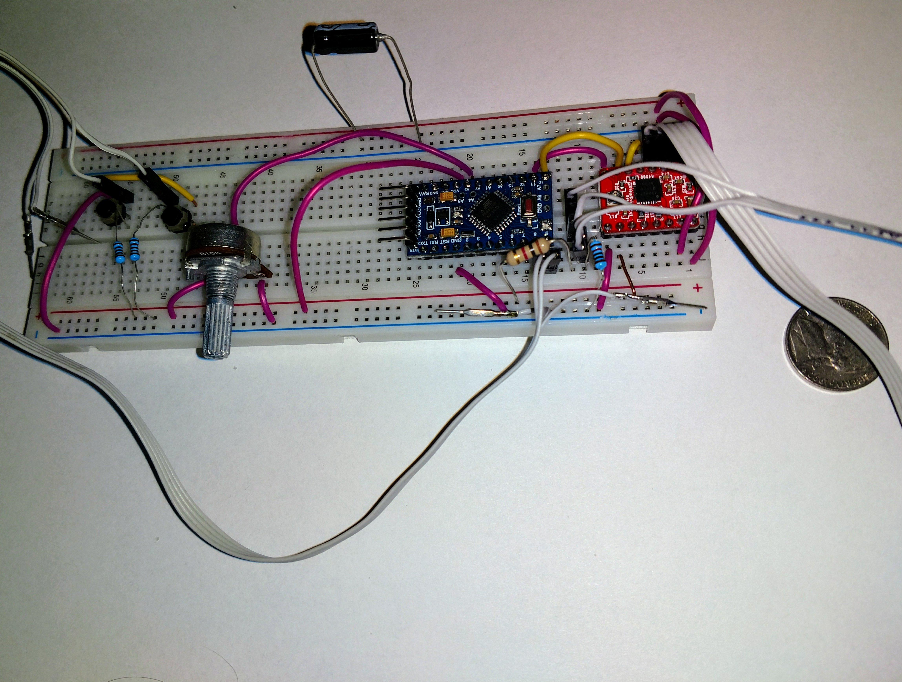

Atmel, AVR, Arduino

Atmel
About a year and a half ago I started learning about microcontrollers using Arduino/AVR. Arduino is a nice
simple way to get started with microcontrollers, with a fairly simple learning curve and a lot of basic info
on getting started in a hobbyist setting. There are a lot of free prototype programs to learn from, and forums
with other people using AVR processors for simple projects.
AtTiny85
I started out with an AtTiny in a postage stamp size USB dongle development board.
The AtTiny85 chip only had 8 pins, 5 of which are IO. It includes
USB and standard UART, an ADC and pulse width modulation on two pins. I did the ubiquitous blinkey
program (pretty much "hello world" of microcontrollers), used the ADC, a potentiometer, and PWM to
control the brightness of an led, and a program to run shell scripts over USB when the dongle was
plugged in.
AtMega328P
Atmel's AtMega328P is a step up from the AtTiny. It comes in larger 28 or 32 pin packages running up
to 20 MHz with an external crystal and containing up to 32 KB of program memory. There are more
ADC and PWM pins available, and the chips can operate on either 3.3 V or 5 V logic. This opens
possible applications including controlling stepper motors, LCD character displays, multiple sensor
inputs, use as data logger interfaces for desktop computers and many other options.
There are some disadvantages to the whole Arduino experience however. Primarily, programming in the
Arduino IDE is built to be simple and approachable for people without a lot of coding experience to
make the learning curve easier for hobbyists and beginners. While this was nice early on, trying to do
anything more advanced than simple applications with one set of initializations and one looping
function becomes rather impractical. The programming language is some variant of C/C++, but Arduino
provides it's own libraries for each chip that bury a lot of the more advanced configuration options
below a set of simple functions, and the IDE does not have any way of looking through the header
files. But by far the most bothersome is the way it handles interrupts. Arduino doesn't handle
interrupts in the usual way for C/C++ and I still haven't gotten it to actually work. I think it is,
again, one of those things that is supposed to be easier for people who don't come in with any
experience with coding.